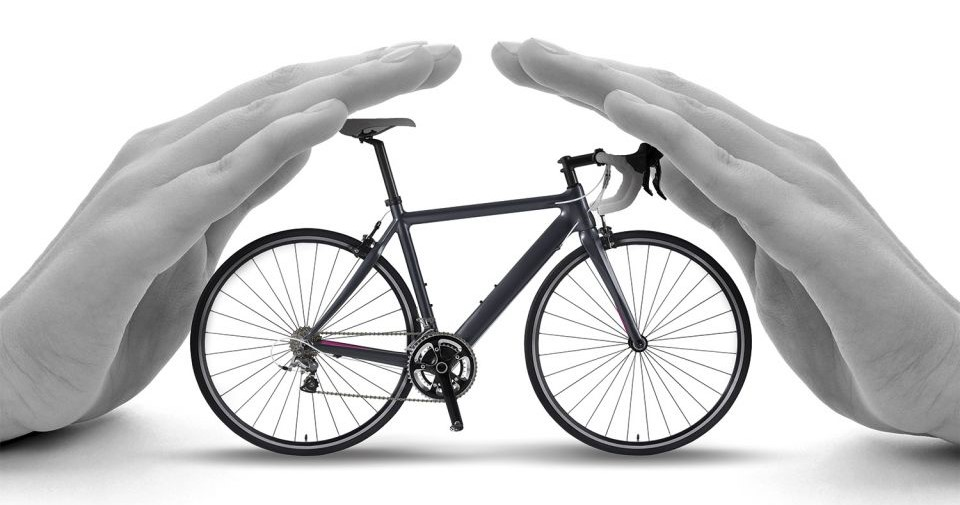

IMPORTANTE: NÃO ESQUECER DE ATUALIZAR ESSA PÁGINA COM A DESCRIÇÃO DO PROJETO ATUALIZADA
Na primeira etapa de nosso projeto, o cliente, considerando que ele já está cadastrado no site e que já passou algumas de suas informações pessoais que permitiu prosseguir com a solicitação do seguro, será direcionado à etapa “Tipo de seguro”, no qual escolherá aquele seguro de bike que melhor se encaixa com a sua necessidade e com seu estilo de vida, que pode ser adquirido independentemente do valor da bike.
Após isso, o cliente será direcionado para a etapa “Coleta de informações do cliente e da bike”, no qual ele deve enviar para a vistoria fotos dos seus documentos pessoais especificados no site, como RG, CPF e comprovante de residência e, também, deve enviar fotos dos documentos e algumas informações da bike, como nota fiscal e número de série
Caso esteja tudo certo, o cliente será direcionado para a etapa “Envio das fotos e vídeos da bike para a vistoria”, onde, como o próprio nome diz, o cliente deverá enviar fotos e vídeos de partes específicas da bike para a vistoria - essas fotos e vídeos devem obrigatoriamente ser tiradas no momento da vistoria: para isso, nosso sistema não permite fazer upload de arquivos já existentes. Nesse momento, ao invés da vistoria da bike ser realizada por um funcionário, ela será realizada em segundos por uma inteligência artificial com visão computadorizada que identificará aspectos pré-estabelecidos nas fotos e vídeos.
Após o término da análise das fotos, vídeos e documentos, a inteligência artificial analisará e enviará ao cliente um e-mail mostrando o status de sua vistoria: se está com documentos faltando, aprovado ou reprovado – a partir desse e-mail, o cliente saberá os próximos passos a serem tomados e, se for aprovado, será direcionado a uma página onde assinará sua apólice e fará o pagamento. Todas essas informações enviadas e analisadas pelo site são possíveis por conta do código, do banco de dados e da inteligência artificial criada por nós.
Durante todo o processo da vistoria o cliente pode entrar em contato com o time de atendimento, que é um ChatBot treinado para responder as dúvidas pertinentes ao processo de vistoria para solucionar possíveis dúvidas. Ao fim, o cliente poderá deixar seu feedback sobre a vistoria em questão de tempo, serviços, problemas, atendimento e resolução de dúvidas.
